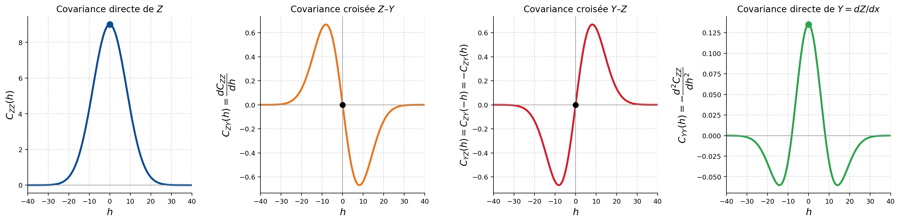
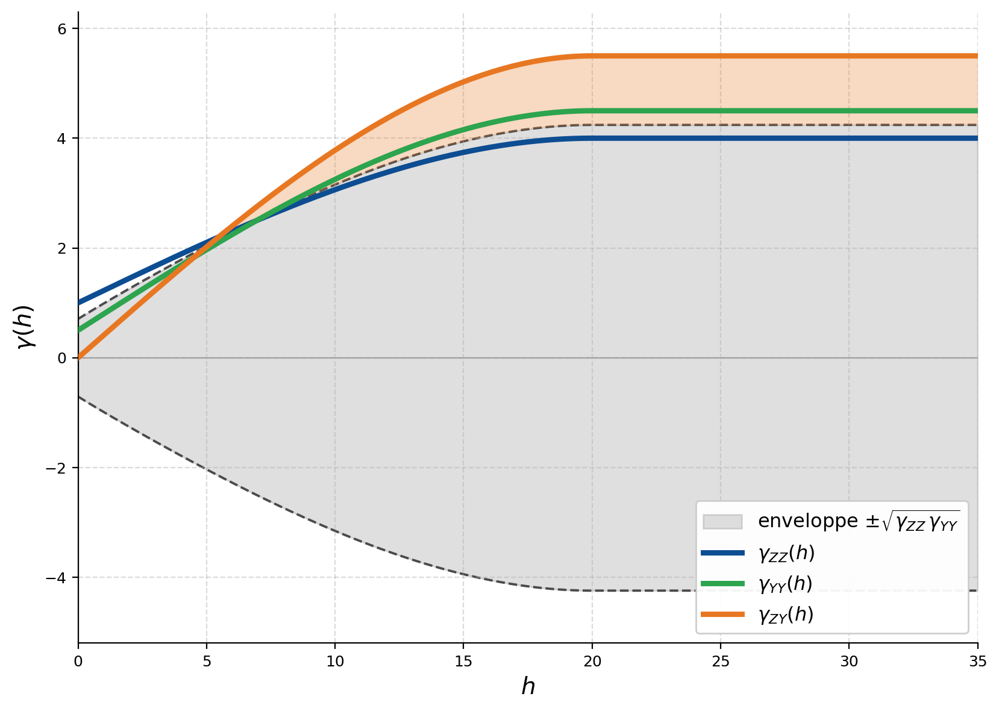
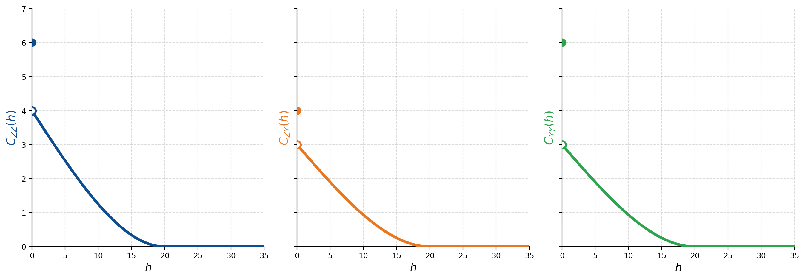

10 Géostatistique multivariable
Ce chapitre introduit le cokrigeage, c’est-à-dire l’application du krigeage à plusieurs variables. Cette méthode permet d’estimer une variable principale en exploitant également l’information fournie par d’autres variables corrélées. La covariance croisée et le variogramme croisé, qui décrivent les relations entre les différentes variables, sont d’abord définis. Le cokrigeage simple, ordinaire et universel est ensuite présenté. Le chapitre aborde également certains cas particuliers, notamment celui d’une variable secondaire très densément échantillonnée ou liée à la variable principale par une relation connue. Les fonctions aléatoires multivariées et le modèle linéaire de corégionalisation sont alors introduits afin de construire des modèles cohérents entre plusieurs variables. Enfin, la discussion s’étend aux modèles spatio-temporels, dans lesquels les données varient à la fois dans l’espace et dans le temps.
À la fin de ce chapitre, vous serez en mesure de :
Décrire la mécanique du cokrigeage comme généralisation du krigeage au cas multivariable;
Calculer et interpréter des covariances croisées et des variogrammes croisés;
Dériver et résoudre les systèmes de cokrigeage simple, ordinaire et universel;
Définir les paramètres d’un modèle linéaire de corégionalisation et vérifier son admissibilité;
Analyser les situations où le cokrigeage apporte un gain significatif par rapport au krigeage;
Expliquer les principes des modèles spatio-temporels en géostatistique.
Ce chapitre s’appuie principalement sur le livre suivant :
Wackernagel, H. (2003). Multivariate Geostatistics: An Introduction with Applications (3ᵉ éd.). Springer-Verlag, Berlin.
10.1 Notations et hypothèses
Le cokrigeage étend le krigeage à l’estimation multivariable. Lorsque plusieurs variables régionalisées corrélées sont disponibles, on estime la variable principale en exploitant aussi l’information des variables secondaires. Les liens entre variables sont décrits par les covariances croisées, qui s’ajoutent aux covariances directes dans le système d’estimation; la variance de cokrigeage qui en résulte est inférieure ou égale à celle du krigeage univarié.
Ce cadre recouvre plusieurs configurations d’échantillonnage : variables mesurées aux mêmes points (teneurs en cuivre et en nickel sur les mêmes forages), ou en des points distincts (charge hydraulique et transmissivité en hydrogéologie). Le cas le plus favorable au cokrigeage est celui d’une variable principale peu échantillonnée, complétée par une variable secondaire dense telle qu’un levé sismique ou géophysique. Ce chapitre établit les systèmes d’estimation associés, la modélisation des covariances directes et croisées, et les conditions sous lesquelles le cokrigeage apporte un gain sur le krigeage.
Cadre général
On note \(Z(\mathbf{x})\) la variable régionalisée principale, celle qu’on cherche à estimer, et \(Y(\mathbf{x})\) une variable régionalisée secondaire dont on veut exploiter l’information. Tout ce qui suit se généralise sans peine à plusieurs variables secondaires; on s’en tient à une seule pour garder les équations lisibles.
Les observations de \(Z\) sont disponibles en \(n_Z\) points, \(Z_1 = Z(\mathbf{x}_1^Z), \dots, Z_{n_Z} = Z(\mathbf{x}_{n_Z}^Z)\), et celles de \(Y\) en \(n_Y\) points, \(Y_1 = Y(\mathbf{x}_1^Y), \dots, Y_{n_Y} = Y(\mathbf{x}_{n_Y}^Y)\). Les points d’échantillonnage de \(Z\) et de \(Y\) peuvent différer, en nombre comme en position. Les données sont alors :
- colocalisées : chaque point de mesure porte à la fois une observation de \(Z\) et de \(Y\);
- non colocalisées : aucune observation des deux variables n’est disponible au même emplacement;
- partiellement colocalisées : certaines positions portent les deux variables, d’autres une seule.
Le cas le plus intéressant est celui où la variable secondaire est bien plus dense que la principale. C’est là que le cokrigeage a le plus à offrir.
Estimateur de cokrigeage
L’estimateur de cokrigeage est une combinaison linéaire des observations des deux variables :
\[ Z_0^* = \sum_{i=1}^{n_Z} \lambda_i \, Z_i + \sum_{j=1}^{n_Y} \alpha_j \, Y_j \]
où \(Z_0 = Z(\mathbf{x}_0)\) est la valeur à estimer au point \(\mathbf{x}_0\), \(\lambda_i\) les poids des observations de \(Z\) et \(\alpha_j\) ceux des observations de \(Y\). On cherche ces poids de façon à minimiser la variance de l’erreur d’estimation, sous d’éventuelles contraintes de non-biais.
Pour monter le système, il faut deux covariances directes et une covariance croisée :
- \(C_{ZZ}(\mathbf{h})\), la covariance directe de la variable principale;
- \(C_{YY}(\mathbf{h})\), la covariance directe de la variable secondaire;
- \(C_{ZY}(\mathbf{h})\), la covariance croisée entre \(Z\) et \(Y\).
Les deux covariances directes sont celles du krigeage univarié. La covariance croisée, elle, décrit la dépendance spatiale entre les deux variables : c’est par elle que l’information passe de la secondaire vers la principale.
Covariance croisée
La covariance croisée entre \(Z(\mathbf{x})\) et \(Y(\mathbf{x})\) est définie par :
\[ C_{ZY}(\mathbf{h}) = \operatorname{Cov}\big[Z(\mathbf{x}),\, Y(\mathbf{x} + \mathbf{h})\big] = \mathbb{E}\big[(Z(\mathbf{x}) - m_Z)(Y(\mathbf{x} + \mathbf{h}) - m_Y)\big] \]
où \(m_Z = \mathbb{E}[Z(\mathbf{x})]\) et \(m_Y = \mathbb{E}[Y(\mathbf{x})]\) sont les moyennes, supposées constantes sous stationnarité. Elle mesure l’intensité de la corrélation entre \(Z\) et \(Y\) à une séparation \(\mathbf{h}\) : positive, les deux variables augmentent ou diminuent ensemble; négative, elles varient en sens inverse; nulle, elles sont décorrélées à cette distance.
Contrairement à la covariance directe, la covariance croisée n’est pas forcément symétrique : en général, \(C_{ZY}(\mathbf{h}) \neq C_{ZY}(-\mathbf{h})\). Cette asymétrie traduit souvent un effet de retard (delay effect), quand une variable réagit avec un décalage spatial sur l’autre; le maximum de corrélation n’est alors pas à l’origine, mais à un certain décalage \(\mathbf{h}\). Sous stationnarité d’ordre deux, on a par ailleurs
\[ C_{ZY}(\mathbf{h}) = C_{YZ}(-\mathbf{h}). \]
La valeur à l’origine \(C_{ZY}(\mathbf{0})\) est la covariance entre \(Z\) et \(Y\) au même point; on la normalise pour obtenir le coefficient de corrélation :
\[ \rho_{ZY} = \frac{C_{ZY}(\mathbf{0})}{\sqrt{C_{ZZ}(\mathbf{0}) \, C_{YY}(\mathbf{0})}}. \]
Variogramme croisé
Le variogramme croisé est défini par :
\[ \gamma_{ZY}(\mathbf{h}) = \frac{1}{2} \, \mathbb{E}\big[(Z(\mathbf{x}+\mathbf{h}) - Z(\mathbf{x}))(Y(\mathbf{x}+\mathbf{h}) - Y(\mathbf{x}))\big] \]
Sous stationnarité d’ordre deux, il se relie à la covariance croisée par :
\[ \gamma_{ZY}(\mathbf{h}) = C_{ZY}(\mathbf{0}) - \frac{1}{2}\big(C_{ZY}(\mathbf{h}) + C_{ZY}(-\mathbf{h})\big) \]
Le variogramme croisé est toujours symétrique, \(\gamma_{ZY}(\mathbf{h}) = \gamma_{ZY}(-\mathbf{h})\). Il ne peut donc pas rendre compte des asymétries de la covariance croisée : celle-ci est en ce sens plus générale.
Calcul expérimental
La covariance croisée expérimentale, pour une classe de distance centrée sur \(h\), est :
\[ \hat{C}_{ZY}(h) = \frac{1}{N(h)} \sum_{(i,j) \in N(h)} \big(Z(\mathbf{x}_i) - m_Z\big)\big(Y(\mathbf{x}_j) - m_Y\big) \]
où la somme porte sur les paires \((\mathbf{x}_i, \mathbf{x}_j)\) telles que \(\|\mathbf{x}_j - \mathbf{x}_i\| \approx h\), avec \(Z\) observé en \(\mathbf{x}_i\) et \(Y\) en \(\mathbf{x}_j\). Le variogramme croisé expérimental est :
\[ \hat{\gamma}_{ZY}(h) = \frac{1}{2N(h)} \sum_{(i,j) \in N(h)} \big(Z(\mathbf{x}_i) - Z(\mathbf{x}_j)\big)\big(Y(\mathbf{x}_i) - Y(\mathbf{x}_j)\big) \]
La différence entre les deux est décisive en pratique. Pour la covariance croisée, il suffit d’avoir \(Z\) à un point et \(Y\) à un autre, à la distance \(h\) : chaque paire \((Z(\mathbf{x}_i), Y(\mathbf{x}_j))\) compte. Le variogramme croisé, lui, exige les deux variables aux deux extrémités de chaque paire, soit quatre observations \(Z(\mathbf{x}_i), Z(\mathbf{x}_j), Y(\mathbf{x}_i), Y(\mathbf{x}_j)\) : toutes les données non colocalisées sont donc perdues.
Quand les variables ne sont que partiellement colocalisées, la covariance croisée exploite bien plus de données. Et si elles sont entièrement hétérotopes (aucun point commun), le variogramme croisé n’est plus estimable : on lui substitue le variogramme pseudo-croisé, construit sur des paires où chaque variable n’est observée qu’à une extrémité. Comme au chapitre précédent, ces fonctions se déclinent par direction pour tenir compte de l’anisotropie, les classes étant définies par distance et par direction, chacune avec sa tolérance.
Variance d’estimation
La variance de l’erreur d’estimation du cokrigeage s’écrit, dans le cas général :
\[ \begin{aligned} \sigma_e^2 = \operatorname{Var}(Z_0 - Z_0^*) &= C_{ZZ}(\mathbf{0}) \\ &\quad + \sum_{i=1}^{n_Z} \sum_{j=1}^{n_Z} \lambda_i \lambda_j \, C_{ZZ}(\mathbf{x}_i - \mathbf{x}_j) + 2 \sum_{i=1}^{n_Z} \sum_{j=1}^{n_Y} \lambda_i \alpha_j \, C_{ZY}(\mathbf{x}_i - \mathbf{x}_j) + \sum_{i=1}^{n_Y} \sum_{j=1}^{n_Y} \alpha_i \alpha_j \, C_{YY}(\mathbf{x}_i - \mathbf{x}_j) \\ &\quad - 2 \sum_{i=1}^{n_Z} \lambda_i \, C_{ZZ}(\mathbf{x}_i - \mathbf{x}_0) - 2 \sum_{j=1}^{n_Y} \alpha_j \, C_{YZ}(\mathbf{x}_j - \mathbf{x}_0) \end{aligned} \]
Les covariances croisées \(C_{ZY}\) sont au cœur de cette expression : ce sont elles qui font gagner en précision. On minimise cette variance sous les contraintes de non-biais appropriées, et on obtient les différents systèmes de cokrigeage des sections suivantes.
On retrouve les trois phénomènes de la variance d’estimation en krigeage : 1) la variabilité du phénomène ; 2) la redondance entre observations ; et 3) leur position par rapport au point à estimer. Le cokrigeage les étend aux interactions entre variables ; redondance entre données principales, entre principale et secondaire, entre secondaires, et position des données secondaires par rapport au point à estimer.
Le modèle linéaire de corégionalisation, qui rend ces covariances directes et croisées admissibles, est détaillé plus loin (section « Fonctions aléatoires multivariées »). Deux facteurs commandent l’apport du cokrigeage : l’intensité du lien entre variables et la configuration des données. On commence par le cas le plus simple, celui où les moyennes sont connues : le cokrigeage simple.
10.2 Cokrigeage simple
Le cokrigeage simple s’applique quand les moyennes \(m_Z\) et \(m_Y\) sont connues. Comme au krigeage simple, on travaille alors sur les écarts à la moyenne : les poids combinent ces écarts, sans qu’il faille ajouter de contrainte de non-biais.
Construction de l’estimateur
En centrant les observations sur leurs moyennes respectives, l’estimateur du cokrigeage simple s’écrit :
\[ Z_0^* = m_Z + \sum_{i=1}^{n_Z} \lambda_i \, (Z_i - m_Z) + \sum_{j=1}^{n_Y} \alpha_j \, (Y_j - m_Y) \]
Condition de non-biais
La vérification est immédiate. Comme \(\mathbb{E}[Z_i - m_Z] = 0\) et \(\mathbb{E}[Y_j - m_Y] = 0\) :
\[ \mathbb{E}[Z_0^*] = m_Z + \sum_{i=1}^{n_Z} \lambda_i \underbrace{\mathbb{E}[Z_i - m_Z]}_{=\,0} + \sum_{j=1}^{n_Y} \alpha_j \underbrace{\mathbb{E}[Y_j - m_Y]}_{=\,0} = m_Z = \mathbb{E}[Z_0] \]
L’estimateur est donc sans biais quels que soient les poids, exactement comme au krigeage simple. On n’impose rien sur \(\lambda_i\) ni sur \(\alpha_j\).
Système de cokrigeage simple
On minimise la variance d’estimation sans contrainte. En annulant les dérivées partielles par rapport à chaque poids \(\lambda_k\) et \(\alpha_k\), on obtient le système :
\[ \begin{cases} \displaystyle\sum_{j=1}^{n_Z} \lambda_j \, C_{ZZ}(\mathbf{x}_i - \mathbf{x}_j) + \sum_{j=1}^{n_Y} \alpha_j \, C_{ZY}(\mathbf{x}_i - \mathbf{x}_j) = C_{ZZ}(\mathbf{x}_i - \mathbf{x}_0), & i = 1, \dots, n_Z \\[8pt] \displaystyle\sum_{j=1}^{n_Z} \lambda_j \, C_{YZ}(\mathbf{x}_i - \mathbf{x}_j) + \sum_{j=1}^{n_Y} \alpha_j \, C_{YY}(\mathbf{x}_i - \mathbf{x}_j) = C_{YZ}(\mathbf{x}_i - \mathbf{x}_0), & i = 1, \dots, n_Y \end{cases} \]
Le premier bloc de \(n_Z\) équations vient de la dérivation par rapport aux poids \(\lambda_i\) de la variable principale, le second de \(n_Y\) équations par rapport aux poids \(\alpha_j\) de la variable secondaire. Le second membre fait intervenir les covariances entre chaque observation et la quantité à estimer \(Z_0\).
Forme matricielle
Le système se met sous la forme compacte \(\mathbf{K}\, \boldsymbol{w} = \mathbf{k}\) :
\[ \underbrace{\begin{bmatrix} \mathbf{K}_{ZZ} & \mathbf{K}_{ZY} \\ \mathbf{K}_{YZ} & \mathbf{K}_{YY} \end{bmatrix}}_{\mathbf{K}} \underbrace{\begin{bmatrix} \boldsymbol{\lambda} \\ \boldsymbol{\alpha} \end{bmatrix}}_{\boldsymbol{w}} = \underbrace{\begin{bmatrix} \mathbf{k}_{ZZ_0} \\ \mathbf{k}_{YZ_0} \end{bmatrix}}_{\mathbf{k}} \]
où \(\mathbf{K}_{ZZ}\) (\(n_Z \times n_Z\)) rassemble les covariances entre les observations de \(Z\), \(\mathbf{K}_{YY}\) (\(n_Y \times n_Y\)) celles entre les observations de \(Y\), et \(\mathbf{K}_{ZY} = \mathbf{K}_{YZ}^\top\) (\(n_Z \times n_Y\)) les covariances croisées. Les vecteurs \(\mathbf{k}_{ZZ_0}\) et \(\mathbf{k}_{YZ_0}\) contiennent les covariances entre les observations, respectivement de \(Z\) et de \(Y\), et le point à estimer \(Z_0\). Le système est de taille \((n_Z + n_Y) \times (n_Z + n_Y)\), plus grand que celui du krigeage simple (\(n_Z \times n_Z\)).
Variance de cokrigeage simple
La variance d’estimation optimale est :
\[ \sigma_{CS}^2 = C_{ZZ}(\mathbf{0}) - \sum_{i=1}^{n_Z} \lambda_i \, C_{ZZ}(\mathbf{x}_i - \mathbf{x}_0) - \sum_{j=1}^{n_Y} \alpha_j \, C_{YZ}(\mathbf{x}_j - \mathbf{x}_0) \]
ou, sous forme matricielle, \(\sigma_{CS}^2 = C_{ZZ}(\mathbf{0}) - \boldsymbol{w}^\top \mathbf{k}\). Cette variance est toujours inférieure ou égale à celle du krigeage simple de \(Z\) seul : ajouter les observations de \(Y\) ne peut qu’améliorer l’estimation, ou la laisser inchangée.
Remarque. Le cokrigeage simple peut estimer \(Z_0\) même sans aucune donnée de la variable principale \(Z\). Il suffit d’avoir au moins une donnée de la variable secondaire \(Y\) et un lien non nul entre \(Z\) et \(Y\). Sans donnée de \(Y\), on retombe simplement sur le krigeage simple de la principale. On verra que le cokrigeage ordinaire, lui, exige de connaître \(Z\).
🧮 Atelier interactif 10.1 — Cokrigeage simple (CS)
Pendant du KS, mais à deux variables, avec moyennes connues (\(m_Z\), \(m_Y\)). La principale \(Z\) (rare) et la secondaire \(Y\) (dense) sont sur deux axes distincts (échelles différentes). Le modèle de corégionalisation est réglé par la matrice de paliers \(\mathbf{B} = \begin{bmatrix} b_{ZZ} & b_{ZY} \\ b_{ZY} & b_{YY} \end{bmatrix}\), avec \(\rho = b_{ZY}/\sqrt{b_{ZZ} b_{YY}}\). Là où \(Z\) manque, le cokrigeage exploite \(Y\) par l’intermédiaire de \(b_{ZY}\); comparez au krigeage de \(Z\) seul et augmentez \(|\rho|\) pour voir l’apport.
10.3 Cokrigeage ordinaire
Le cokrigeage ordinaire s’applique quand les moyennes \(m_Z\) et \(m_Y\) sont inconnues. On ne peut plus centrer les données sur une moyenne connue : le non-biais est alors imposé par des contraintes sur les poids.
Conditions de non-biais
L’estimateur garde la forme du krigeage ordinaire, avec les données de la variable secondaire en plus :
\[ Z_0^* = \sum_{i=1}^{n_Z} \lambda_i \, Z_i + \sum_{j=1}^{n_Y} \alpha_j \, Y_j \]
Pour qu’il soit sans biais, son espérance doit valoir la moyenne de la variable principale, \(m_Z\) :
\[ \mathbb{E}[Z_0^*] = m_Z \sum_{i=1}^{n_Z} \lambda_i + m_Y \sum_{j=1}^{n_Y} \alpha_j \]
Comme \(m_Z\) et \(m_Y\) sont inconnues, et pas forcément égales, on impose deux contraintes :
\[ \sum_{i=1}^{n_Z} \lambda_i = 1 \quad \text{et} \quad \sum_{j=1}^{n_Y} \alpha_j = 0 \]
La première est celle du krigeage ordinaire : elle force les poids de la variable principale à restituer la moyenne de \(Z\). La seconde empêche la moyenne inconnue de \(Y\) d’entrer dans l’estimation : la variable secondaire aide donc par ses variations spatiales et sa corrélation avec \(Z\), jamais par son niveau moyen. C’est une vraie limite du cokrigeage ordinaire, surtout face au cokrigeage simple.
Système de cokrigeage ordinaire
On minimise la variance d’estimation sous les deux contraintes, par les multiplicateurs de Lagrange \(\nu_Z\) et \(\nu_Y\). On obtient le système :
\[ \begin{cases} \displaystyle\sum_{j=1}^{n_Z} \lambda_j \, C_{ZZ}(\mathbf{x}_i - \mathbf{x}_j) + \sum_{j=1}^{n_Y} \alpha_j \, C_{ZY}(\mathbf{x}_i - \mathbf{x}_j) + \nu_Z = C_{ZZ}(\mathbf{x}_i - \mathbf{x}_0), & i = 1, \dots, n_Z \\[8pt] \displaystyle\sum_{j=1}^{n_Z} \lambda_j \, C_{YZ}(\mathbf{x}_i - \mathbf{x}_j) + \sum_{j=1}^{n_Y} \alpha_j \, C_{YY}(\mathbf{x}_i - \mathbf{x}_j) + \nu_Y = C_{YZ}(\mathbf{x}_i - \mathbf{x}_0), & i = 1, \dots, n_Y \\[8pt] \displaystyle\sum_{i=1}^{n_Z} \lambda_i = 1 \\[6pt] \displaystyle\sum_{j=1}^{n_Y} \alpha_j = 0 \end{cases} \]
Le système compte \(n_Z + n_Y + 2\) équations et autant d’inconnues. Sa structure décalque celle du krigeage ordinaire, à deux ajouts près : les termes de covariance croisée liés à la variable secondaire et la contrainte de non-biais qui pèse sur elle.
Forme matricielle
Le système de cokrigeage ordinaire s’écrit sous forme matricielle :
\[ \begin{bmatrix} \mathbf{K}_{ZZ} & \mathbf{K}_{ZY} & \mathbf{1} & \mathbf{0} \\ \mathbf{K}_{YZ} & \mathbf{K}_{YY} & \mathbf{0} & \mathbf{1} \\ \mathbf{1}^\top & \mathbf{0}^\top & 0 & 0 \\ \mathbf{0}^\top & \mathbf{1}^\top & 0 & 0 \end{bmatrix} \begin{bmatrix} \boldsymbol{\lambda} \\ \boldsymbol{\alpha} \\ \nu_Z \\ \nu_Y \end{bmatrix} = \begin{bmatrix} \mathbf{k}_{ZZ_0} \\ \mathbf{k}_{YZ_0} \\ 1 \\ 0 \end{bmatrix} \]
où \(\mathbf{K}_{ZZ}\) et \(\mathbf{K}_{YY}\) sont les matrices de covariances directes de \(Z\) et de \(Y\), \(\mathbf{K}_{ZY} = \mathbf{K}_{YZ}^\top\) la matrice des covariances croisées, et \(\mathbf{1}\), \(\mathbf{0}\) des vecteurs de 1 et de 0 qui imposent les contraintes de non-biais. Les vecteurs \(\mathbf{k}_{ZZ_0}\) et \(\mathbf{k}_{YZ_0}\) contiennent les covariances entre les observations et le point à estimer \(Z_0\); \(\nu_Z\) et \(\nu_Y\) sont les multiplicateurs de Lagrange associés aux deux contraintes.
Variance de cokrigeage ordinaire
\[ \sigma_{CO}^2 = C_{ZZ}(\mathbf{0}) - \sum_{i=1}^{n_Z} \lambda_i \, C_{ZZ}(\mathbf{x}_i - \mathbf{x}_0) - \sum_{j=1}^{n_Y} \alpha_j \, C_{YZ}(\mathbf{x}_j - \mathbf{x}_0) - \nu_Z \]
Seul \(\nu_Z\) apparaît : le terme en \(\nu_Y\) est multiplié par la valeur de la contrainte sur \(Y\), qui est nulle.
Note. Un cokrigeage ordinaire demande au moins une observation de \(Z\) (pour satisfaire \(\sum \lambda_i = 1\)) et au moins deux observations de \(Y\) (pour satisfaire \(\sum \alpha_j = 0\) sans tout annuler). Avec une seule observation de \(Y\), son poids serait forcément nul et le système se ramènerait au krigeage ordinaire classique.
Cas particulier : une moyenne connue, l’autre inconnue
En pratique, il arrive que la moyenne de la variable secondaire soit connue — \(Y\) vient d’un modèle physique ou d’une mesure exhaustive déjà centrée — alors que celle de la variable principale reste inconnue. On centre alors les observations de \(Y\) sur \(m_Y\) et on n’impose plus qu’une seule contrainte, sur les poids de \(Z\) :
\[ Z_0^* = \sum_{i=1}^{n_Z} \lambda_i \, Z_i + \sum_{j=1}^{n_Y} \alpha_j \, (Y_j - m_Y), \qquad \sum_{i=1}^{n_Z} \lambda_i = 1. \]
Le système correspondant n’a plus qu’un seul multiplicateur de Lagrange, \(\nu_Z\) :
\[ \begin{cases} \displaystyle\sum_{j=1}^{n_Z} \lambda_j \, C_{ZZ}(\mathbf{x}_i - \mathbf{x}_j) + \sum_{j=1}^{n_Y} \alpha_j \, C_{ZY}(\mathbf{x}_i - \mathbf{x}_j) + \nu_Z = C_{ZZ}(\mathbf{x}_i - \mathbf{x}_0), & i = 1, \dots, n_Z \\[8pt] \displaystyle\sum_{j=1}^{n_Z} \lambda_j \, C_{YZ}(\mathbf{x}_i - \mathbf{x}_j) + \sum_{j=1}^{n_Y} \alpha_j \, C_{YY}(\mathbf{x}_i - \mathbf{x}_j) = C_{YZ}(\mathbf{x}_i - \mathbf{x}_0), & i = 1, \dots, n_Y \\[8pt] \displaystyle\sum_{i=1}^{n_Z} \lambda_i = 1 \end{cases} \]
Ce cas intermédiaire est fréquent et commode : il libère les poids de \(Y\) de la contrainte \(\sum \alpha_j = 0\), donc laisse passer plus d’information, sans exiger de connaître \(m_Z\). C’est exactement le cadre du cokrigeage colocalisé, vu plus loin, où la variable secondaire est dense et sa moyenne bien estimée.
Changement de paradigme par rapport au krigeage
En krigeage univarié, on privilégie le krigeage ordinaire : il ne demande pas la moyenne et s’accommode bien de la quasi-stationnarité locale, avec le variogramme pour outil de base. En cokrigeage, la logique s’inverse. On utilise souvent le cokrigeage simple, pour trois raisons :
- la contrainte \(\sum \alpha_j = 0\) du cokrigeage ordinaire bride le transfert d’information de la variable secondaire, donc rogne le gain sur le krigeage seul;
- la covariance — et non le variogramme — devient l’outil de base : elle seule décrit les relations potentiellement asymétriques entre variables, ce que le variogramme croisé ne sait pas faire;
- la covariance croisée exploite les données non colocalisées, là où le variogramme croisé exige les deux variables aux deux bouts de chaque paire.
En pratique, quand la corrélation entre variables est forte et que la secondaire est dense, le cokrigeage simple procure un gain substantiel.
🧮 Atelier interactif 10.2 — Cokrigeage ordinaire (CO)
Pendant du KO, mais à deux variables, moyennes inconnues (contraintes de non-biais par variable). La principale \(Z\) (rare) et la secondaire \(Y\) (dense) sont sur deux axes distincts (variances différentes). Réglez la matrice de corégionalisation \(\mathbf{B} = \begin{bmatrix} b_{ZZ} & b_{ZY} \\ b_{ZY} & b_{YY} \end{bmatrix}\), avec \(\rho = b_{ZY}/\sqrt{b_{ZZ} b_{YY}}\), et comparez le cokrigeage de \(Z\) au krigeage de \(Z\) seul : là où \(Z\) manque, le cokrigeage emprunte l’information de \(Y\) et réduit la variance.
10.4 Exemple de système de cokrigeage
On construit ici le système de cokrigeage sur un petit jeu de données, afin d’expliciter l’origine de chaque poids et la place des covariances croisées dans l’estimation.
La matrice élargie du cokrigeage réunit trois choses : les covariances directes de \(Z\) et de \(Y\), les covariances croisées \(Z\)–\(Y\), et les contraintes de non-biais par variable. Ce sont ses blocs croisés qui commandent la répartition des poids entre les deux variables, donc la façon dont la secondaire vient épauler la principale.
On travaille avec trois positions. On connaît \(Z_1\) et \(Y_1\) au même endroit, en \(\mathbf{x}_1 = 0\); on connaît aussi \(Z_2\) en \(\mathbf{x}_2 = 10\). On veut estimer \(Z_0\) en \(\mathbf{x}_0 = 5\), où une donnée secondaire \(Y_0\) est également disponible.
Les moyennes sont connues : on est dans le cas du cokrigeage simple. Le système s’écrit \(\mathbf{A}\, \boldsymbol{w} = \mathbf{b}\), dont les inconnues sont les poids des données disponibles : \(\lambda_1\) et \(\lambda_2\) pour les principales \(Z_1\) et \(Z_2\), puis \(\alpha_1\) et \(\alpha_0\) pour les secondaires \(Y_1\) et \(Y_0\).
\[ \underbrace{\begin{bmatrix} C_{ZZ}(0) & C_{ZZ}(10) & C_{ZY}(0) & C_{ZY}(5) \\ C_{ZZ}(10) & C_{ZZ}(0) & C_{ZY}(10) & C_{ZY}(5) \\ C_{YZ}(0) & C_{YZ}(10) & C_{YY}(0) & C_{YY}(5) \\ C_{YZ}(5) & C_{YZ}(5) & C_{YY}(5) & C_{YY}(0) \end{bmatrix}}_{\mathbf{A}} \underbrace{\begin{bmatrix} \lambda_1 \\ \lambda_2 \\ \alpha_1 \\ \alpha_0 \end{bmatrix}}_{\boldsymbol{w}} = \underbrace{\begin{bmatrix} C_{ZZ}(5) \\ C_{ZZ}(5) \\ C_{YZ}(5) \\ C_{YZ}(0) \end{bmatrix}}_{\mathbf{b}} \]
Chaque ligne est une équation : les deux premières viennent de la dérivation par rapport aux poids de \(Z\), les deux suivantes par rapport aux poids de \(Y\). Les blocs diagonaux portent les covariances directes (\(C_{ZZ}\), \(C_{YY}\)), les blocs hors diagonale les covariances croisées (\(C_{ZY}\), \(C_{YZ}\)). Le second membre \(\mathbf{b}\) rassemble les covariances entre chaque donnée et le point à estimer \(Z_0\). Remarquez \(Y_0\), posé au point à estimer : il ne se couple à \(Z_0\) que par \(C_{YZ}(0)\). C’est par ce seul terme que la mesure secondaire colocalisée transmet son information. L’atelier ci-dessous remplit cette matrice pour des données saisies par l’utilisateur et en livre la solution numérique complète.
🧮 Atelier interactif 10.3 — Système de cokrigeage pas à pas
Entrez vos données (positions, \(z\) pour \(Z\), \(y\) pour \(Y\)), choisissez un modèle de corégionalisation, et visualisez la matrice élargie \(\mathbf{A}\) (blocs \(\mathbf{K}_{ZZ}\), \(\mathbf{K}_{YY}\), croisés \(\mathbf{K}_{ZY}\) et contraintes par variable), le vecteur \(\mathbf{b}\) et la solution complète (poids, estimations, variances).
10.5 Cokrigeage universel
Le cokrigeage universel généralise le cokrigeage ordinaire au cas où les moyennes ne sont plus constantes, mais suivent des tendances (dérives) modélisées dans l’espace.
Modèle avec dérives
On décompose chaque variable en une dérive déterministe et un résidu stationnaire :
\[ Z(\mathbf{x}) = m_Z(\mathbf{x}) + R_Z(\mathbf{x}), \quad Y(\mathbf{x}) = m_Y(\mathbf{x}) + R_Y(\mathbf{x}) \]
Les dérives sont des combinaisons linéaires de fonctions de base connues :
\[ m_Z(\mathbf{x}) = \sum_{\ell=0}^{L_Z} a_\ell^Z f_\ell^Z(\mathbf{x}), \quad m_Y(\mathbf{x}) = \sum_{\ell=0}^{L_Y} a_\ell^Y f_\ell^Y(\mathbf{x}) \]
où les fonctions \(f_\ell^Z\) et \(f_\ell^Y\) sont connues (par exemple \(1, x, y, x^2, \dots\)) et les coefficients \(a_\ell^Z\) et \(a_\ell^Y\) inconnus. Les résidus \(R_Z\) et \(R_Y\) sont des fonctions aléatoires stationnaires de moyenne nulle, décrites par les covariances directes et croisées.
Conditions de non-biais
L’estimateur reste une combinaison linéaire :
\[ Z_0^* = \sum_{i=1}^{n_Z} \lambda_i \, Z_i + \sum_{j=1}^{n_Y} \alpha_j \, Y_j \]
La condition de non-biais \(\mathbb{E}[Z_0^* - Z_0] = 0\) force les poids à reproduire exactement les dérives. En substituant leurs expressions et en identifiant les coefficients inconnus \(a_\ell^Z\) et \(a_\ell^Y\), on obtient les conditions d’universalité :
\[ \sum_{i=1}^{n_Z} \lambda_i \, f_\ell^Z(\mathbf{x}_i^Z) = f_\ell^Z(\mathbf{x}_0), \quad \ell = 0, \dots, L_Z \]
\[ \sum_{j=1}^{n_Y} \alpha_j \, f_\ell^Y(\mathbf{x}_j^Y) = 0, \quad \ell = 0, \dots, L_Y \]
Le premier jeu de contraintes assure que la dérive de \(Z\) est bien reproduite. Le second annule la contribution de la dérive de \(Y\) : c’est la généralisation de \(\sum \alpha_j = 0\) au cas non constant.
Système de cokrigeage universel
La minimisation sous contraintes, avec les multiplicateurs de Lagrange \(\nu_\ell^Z\) (\(\ell = 0, \dots, L_Z\)) et \(\nu_\ell^Y\) (\(\ell = 0, \dots, L_Y\)), conduit au système :
\[ \begin{cases} \displaystyle\sum_{j=1}^{n_Z} \lambda_j \, C_{ZZ}(\mathbf{x}_i^Z - \mathbf{x}_j^Z) + \sum_{j=1}^{n_Y} \alpha_j \, C_{ZY}(\mathbf{x}_i^Z - \mathbf{x}_j^Y) + \sum_{\ell=0}^{L_Z} \nu_\ell^Z f_\ell^Z(\mathbf{x}_i^Z) = C_{ZZ}(\mathbf{x}_i^Z - \mathbf{x}_0), & i = 1, \dots, n_Z \\[8pt] \displaystyle\sum_{j=1}^{n_Z} \lambda_j \, C_{YZ}(\mathbf{x}_i^Y - \mathbf{x}_j^Z) + \sum_{j=1}^{n_Y} \alpha_j \, C_{YY}(\mathbf{x}_i^Y - \mathbf{x}_j^Y) + \sum_{\ell=0}^{L_Y} \nu_\ell^Y f_\ell^Y(\mathbf{x}_i^Y) = C_{YZ}(\mathbf{x}_i^Y - \mathbf{x}_0), & i = 1, \dots, n_Y \\[8pt] \displaystyle\sum_{i=1}^{n_Z} \lambda_i \, f_\ell^Z(\mathbf{x}_i^Z) = f_\ell^Z(\mathbf{x}_0), & \ell = 0, \dots, L_Z \\[6pt] \displaystyle\sum_{j=1}^{n_Y} \alpha_j \, f_\ell^Y(\mathbf{x}_j^Y) = 0, & \ell = 0, \dots, L_Y \end{cases} \]
Ce système comporte \(n_Z + n_Y + L_Z + L_Y + 2\) équations. On retrouve le cokrigeage ordinaire comme cas particulier, avec \(L_Z = L_Y = 0\) et \(f_0^Z = f_0^Y = 1\).
Considérations pratiques
Le cokrigeage universel est rarement utilisé tel quel. Il cumule les difficultés des deux méthodes dont il descend : la circularité du krigeage universel (il faut le variogramme des résidus pour estimer la dérive, et la dérive pour estimer le variogramme) et la lourdeur du cokrigeage (ajustement des covariances croisées, vérification de l’admissibilité). On lui préfère souvent une approche en deux temps : retirer d’abord une tendance par régression, puis faire un cokrigeage simple ou ordinaire sur les résidus.
🧮 Atelier interactif 10.4 — Cokrigeage universel (CU)
Pendant du KU, mais à deux variables. La principale \(Z\) (rare) et la secondaire \(Y\) (dense) sont tracées sur deux axes distincts (variances différentes). Chaque variable a sa propre dérive polynomiale (ordre 1 ou 2). Placez le point à estimer au-delà des données pour voir le CU extrapoler la tendance, et comparez au krigeage de \(Z\) seul. La matrice \(\mathbf{B}\) du modèle de corégionalisation est réglable (\(\rho = b_{ZY}/\sqrt{b_{ZZ} b_{YY}}\)).
10.6 Variables liées par un opérateur linéaire
Dans certains cas, la variable secondaire \(Y\) est une transformation linéaire déterministe de la variable principale \(Z\) : une dérivée, une intégrale, une combinaison linéaire. Il est alors inutile d’ajuster un modèle de covariance complet pour chaque variable. On part de la covariance de \(Z\) et on lui applique l’opérateur; les covariances croisées suivent d’elles-mêmes.
Principe général
Soit \(L\) un opérateur linéaire appliqué à \(Z\) (dérivée, intégrale, combinaison linéaire). Si la variable secondaire est définie par \(Y(\mathbf{x}) = L[Z(\mathbf{x})]\), ses covariances croisée et directe se déduisent de celle de \(Z\) :
\[ C_{ZY}(\mathbf{h}) = \operatorname{Cov}\big(Z(\mathbf{x}),\, L[Z(\mathbf{x}+\mathbf{h})]\big) = L\big[C_{ZZ}(\mathbf{h})\big] \]
\[ C_{YY}(\mathbf{h}) = \operatorname{Cov}\big(L[Z(\mathbf{x})],\, L[Z(\mathbf{x}+\mathbf{h})]\big) = L \circ L\big[C_{ZZ}(\mathbf{h})\big] \]
où l’opérateur \(L\) agit sur la variable de séparation \(\mathbf{h}\). Il suffit donc d’un modèle de covariance admissible pour \(Z\) : les covariances croisées en découlent automatiquement, et l’admissibilité du modèle multivariable est garantie.
Exemple en une dimension : \(Y\) est la dérivée de \(Z\)
Supposons que la variable secondaire soit la dérivée spatiale de la variable principale, \(Y(\mathbf{x}) = dZ(\mathbf{x})/dx\). Le cas se rencontre en géophysique, où la gravimétrie fournit une information liée à la dérivée du champ de densité. Les covariances s’écrivent alors :
\[ C_{ZY}(h) = \operatorname{Cov}\left(Z(\mathbf{x}), \frac{dZ(\mathbf{x}+h)}{d(x+h)}\right) = \frac{dC_{ZZ}(h)}{dh} \]
\[ C_{YZ}(h) = \operatorname{Cov}\left(\frac{dZ(\mathbf{x})}{dx}, Z(\mathbf{x}+h)\right) = -\frac{dC_{ZZ}(h)}{dh} = -C_{ZY}(h) \]
\[ C_{YY}(h) = \operatorname{Cov}\left(\frac{dZ(\mathbf{x})}{dx}, \frac{dZ(\mathbf{x}+h)}{d(x+h)}\right) = -\frac{d^2 C_{ZZ}(h)}{dh^2} \]
Deux points méritent l’attention :
- La covariance croisée est antisymétrique, \(C_{ZY}(h) = -C_{YZ}(h)\), donc \(C_{ZY}(0) = 0\) (Figure 10.1). Autrement dit, \(Z\) et sa dérivée ne sont pas corrélées au même point : la valeur d’une fonction en un point ne dit rien de sa pente locale.
- La covariance de la dérivée, \(C_{YY}(h)\), est la dérivée seconde de \(C_{ZZ}(h)\) changée de signe. Elle n’existe que si \(C_{ZZ}(h)\) est deux fois dérivable, ce qui exclut les modèles à comportement linéaire à l’origine (sphérique, exponentiel). Le modèle gaussien, lui, est assez régulier.

Extension aux dimensions supérieures
En deux ou trois dimensions, la variable secondaire peut être une dérivée partielle ou un gradient :
\[ Y_k(\mathbf{x}) = \frac{\partial Z(\mathbf{x})}{\partial x_k} \]
Les covariances croisées s’obtiennent en dérivant \(C_{ZZ}\) par rapport à la composante correspondante du vecteur de séparation \(\mathbf{h}\). On traite de la même façon le cas où la variable secondaire est une intégrale de \(Z\) sur un domaine : une mesure gravimétrique, par exemple, est une intégrale pondérée du champ de densité. Le principe ne change pas : on applique l’opérateur linéaire à la covariance de \(Z\).
Avantages de cette approche
Cette façon de faire a trois atouts. On garde un modèle cohérent entre variables, puisque toutes les covariances viennent du même modèle de départ. On évite d’ajuster séparément \(C_{ZZ}\), \(C_{ZY}\) et \(C_{YY}\). Enfin, le lien entre variables reste ancré dans la physique du problème, plutôt que dans un ajustement purement statistique.
Application : inversion gravimétrique
La gravimétrie en est l’exemple classique : les mesures gravimétriques en surface sont liées à la densité des roches en profondeur par une intégrale. Une fois la covariance du champ de densité modélisée, on en tire les covariances croisées avec les données gravimétriques. Ces données sont souvent bien plus nombreuses et moins coûteuses que les forages : elles servent alors de variable secondaire pour mieux estimer la densité en profondeur.
10.7 Fonctions aléatoires multivariées
Le cokrigeage requiert un modèle de covariance pour chaque variable et les covariances croisées qui décrivent leurs liens. Ces fonctions ne se choisissent pas indépendamment : l’ensemble doit former un modèle admissible, dont la matrice de covariance reste valide pour toute configuration de points. Cette section pose les conditions d’un modèle multivariable admissible, présente les modèles utilisés en pratique, puis quelques propriétés importantes du cokrigeage.
Conditions d’admissibilité
Les covariances directes et croisées ne se choisissent pas séparément : les fonctions \(C_{ZZ}(h)\), \(C_{YY}(h)\), \(C_{ZY}(h)\) et \(C_{YZ}(h)\) doivent former un tout cohérent. Concrètement, la matrice de covariance doit rester semi-définie positive, quelle que soit la position des points (Figure 10.2). On vérifie cette condition dans le domaine spectral : pour chaque fréquence \(\omega\), on forme la matrice des densités spectrales
\[ \mathbf{S}(\omega) = \begin{pmatrix} S_{ZZ}(\omega) & S_{ZY}(\omega) \\ S_{YZ}(\omega) & S_{YY}(\omega) \end{pmatrix} \]
Le modèle est admissible si cette matrice est semi-définie positive à toutes les fréquences, \(\mathbf{S}(\omega) \succeq 0\), ce qui pour deux variables revient à
\[ |S_{ZY}(\omega)|^2 \leq S_{ZZ}(\omega)\,S_{YY}(\omega). \]
La vérification est correcte en théorie, mais on ne l’applique presque jamais directement. Heureusement, certains modèles garantissent l’admissibilité par construction. En voici trois.

Modèle à covariances proportionnelles
Ici, toutes les fonctions de covariance sont proportionnelles à une même fonction de base \(C(h)\) :
\[ \mathbf{C}(h) = \begin{bmatrix} C_{ZZ}(h) & C_{ZY}(h) \\ C_{YZ}(h) & C_{YY}(h) \end{bmatrix} = \mathbf{B} \, C(h) \]
où \(\mathbf{B}\) est la matrice de corégionalisation, symétrique et semi-définie positive (\(\det \mathbf{B} \geq 0\)), et \(C(h)\) une fonction de covariance admissible. On l’appelle corégionalisation intrinsèque : elle revient à supposer que le lien entre variables reste le même à toutes les distances.
Un cas important est celui où les deux variables sont mesurées aux mêmes endroits. Le cokrigeage n’apporte alors rien de plus que le krigeage de la variable principale seule : on dit que la variable est autocrigeable. Si, en revanche, \(Y\) est disponible ailleurs que \(Z\), elle ajoute de l’information spatiale, et le cokrigeage peut améliorer l’estimation, pourvu que la corrélation entre \(Z\) et \(Y\) soit assez forte.
Modèle linéaire de corégionalisation (MLC)
C’est le modèle multivariable le plus utilisé en géostatistique (Figure 10.3). On décompose les fonctions de covariance en une somme de structures élémentaires partagées :
\[ \mathbf{C}(h) = \sum_{k=0}^{K} \mathbf{B}_k \, C_k(h) \]
où chaque \(C_k(h)\) est une fonction de covariance admissible de palier unitaire (effet de pépite, sphérique, exponentiel, gaussien, etc.) et chaque \(\mathbf{B}_k\) une matrice \(2 \times 2\) (dans le cas bivarié) de coefficients, symétrique et semi-définie positive.
Le modèle est admissible si et seulement si chaque matrice \(\mathbf{B}_k\) est semi-définie positive, c’est-à-dire
\[ \det(\mathbf{B}_k) \geq 0 \quad \text{et} \quad \text{éléments diagonaux} \geq 0, \quad \forall \, k. \]
Cette condition est facile à vérifier : c’est là tout l’intérêt du MLC. Si une matrice \(\mathbf{B}_k\) n’est pas semi-définie positive, le modèle n’est pas nécessairement inadmissible (il faudrait alors une vérification spectrale complète); mais si c’est celle de l’effet de pépite qui échoue, le modèle est certainement inadmissible. Le MLC est très souple : chaque structure élémentaire \(C_k(h)\) peut porter un effet différent (variabilité à courte portée, à longue portée), avec ses propres relations croisées à chaque échelle.

Remarque. Le modèle à covariances proportionnelles est un cas particulier du MLC à une seule structure (\(K = 0\), sans effet de pépite, ou avec un effet de pépite proportionnel).
Exemple de MLC et comparaison krigeage–cokrigeage
Déroulons un exemple complet : vérification de l’admissibilité, calcul de covariances, puis comparaison des performances du krigeage et du cokrigeage.
Modèle. On considère deux variables \(Z\) et \(Y\) décrites par le MLC suivant (effet de pépite et composante sphérique de portée 30) :
\[ \mathbf{C}(h) = \begin{bmatrix} 1 & 0 \\ 0 & 1 \end{bmatrix} \delta(h) + \begin{bmatrix} 2 & 2{,}4 \\ 2{,}4 & 4 \end{bmatrix} C_{\text{Sph}}(h;\,30) \]
Admissibilité. On vérifie que chaque matrice \(\mathbf{B}_k\) est semi-définie positive :
- \(\mathbf{B}_0 = \begin{bmatrix} 1 & 0 \\ 0 & 1 \end{bmatrix}\) : \(\det = 1 > 0\), admissible.
- \(\mathbf{B}_1 = \begin{bmatrix} 2 & 2{,}4 \\ 2{,}4 & 4 \end{bmatrix}\) : \(\det = 2 \times 4 - 2{,}4^2 = 2{,}24 > 0\), admissible.
Le modèle est donc un MLC admissible.
Covariance croisée à \(h = 10\). À titre d’exemple :
\[ C_{ZY}(10) = 0 \cdot \delta(10) + 2{,}4 \times C_{\text{Sph}}(10;\,30) = 2{,}4 \times \left[1 - \frac{3}{2}\frac{10}{30} + \frac{1}{2}\left(\frac{10}{30}\right)^3\right] = 1{,}24 \]
Corrélation globale. À distance \(h = 0\) :
\[ \rho_{ZY} = \frac{C_{ZY}(\mathbf{0})}{\sqrt{C_{ZZ}(\mathbf{0}) \, C_{YY}(\mathbf{0})}} = \frac{0 + 2{,}4}{\sqrt{(1+2)(1+4)}} = \frac{2{,}4}{\sqrt{15}} \approx 0{,}62 \]
Si l’on ne retient que le signal structuré (sans l’effet de pépite, vu comme du bruit de mesure), la corrélation monte à \(\rho = 2{,}4 / \sqrt{2 \times 4} \approx 0{,}85\).
Configuration de données. On dispose de \(Z_1\) et \(Y_1\) en \(\mathbf{x}_1 = 0\), de \(Z_2\) en \(\mathbf{x}_2 = 10\), et de \(Y_0\) en \(\mathbf{x}_0 = 5\). On estime \(Z_0\) au point \(\mathbf{x}_0 = 5\). Les moyennes sont supposées nulles.
Ajustement d’un MLC
Ajuster un MLC, c’est déterminer les matrices \(\mathbf{B}_k\) et les paramètres des structures \(C_k(h)\) à partir des variogrammes et covariances croisés expérimentaux. La procédure typique :
- calculer les variogrammes ou covariances directes et croisés expérimentaux;
- choisir un ensemble de structures élémentaires (nombre, types, portées);
- ajuster simultanément toutes les fonctions en optimisant les coefficients des matrices \(\mathbf{B}_k\);
- vérifier que chaque matrice \(\mathbf{B}_k\) est semi-définie positive.
L’ajustement doit être mené simultanément sur toutes les fonctions : ajuster chaque variogramme séparément ne garantit pas l’admissibilité du modèle global.
Comparaison krigeage–cokrigeage
Sur la configuration ci-dessus, par krigeage simple (avec seulement \(Z_1\) et \(Z_2\)) :
\[ \lambda_1 = 0{,}3727, \quad \lambda_2 = 0{,}3727, \quad \sigma_{KS}^2 = 1{,}88 \]
Par cokrigeage simple (avec \(Z_1\), \(Z_2\), \(Y_1\) et \(Y_0\)) :
\[ \lambda_{Z_1} = 0{,}2294, \quad \lambda_{Z_2} = 0{,}2336, \quad \alpha_{Y_1} = 0{,}0072, \quad \alpha_{Y_0} = 0{,}3085, \quad \sigma_{CS}^2 = 1{,}55 \]
On observe trois choses. La variable secondaire \(Y_0\), posée pile au point à estimer, reçoit un poids important (\(0{,}31\)) : c’est l’effet d’écran transposé au cokrigeage, l’information la plus proche dominant. La symétrie des poids de \(Z_1\) et \(Z_2\), égaux en krigeage simple, est rompue, car \(Y_1\) est colocalisé avec \(Z_1\), pas avec \(Z_2\). Enfin, la variance chute nettement, de \(1{,}88\) (krigeage) à \(1{,}55\) (cokrigeage), soit 18 % de mieux.
Par cokrigeage ordinaire, les contraintes \(\sum \lambda_i = 1\) et \(\sum \alpha_j = 0\) donnent :
\[ \lambda_{Z_1} = 0{,}5494, \quad \lambda_{Z_2} = 0{,}4506, \quad \alpha_{Y_1} = -0{,}1678, \quad \alpha_{Y_0} = 0{,}1678, \quad \sigma_{CO}^2 = 1{,}91 \]
La variance du cokrigeage ordinaire (\(1{,}91\)) dépasse à peine celle du krigeage ordinaire (\(2{,}01\)) : la contrainte \(\sum \alpha_j = 0\) empêche la variable secondaire de contribuer pleinement. L’exemple illustre bien le changement de paradigme évoqué plus haut.
Propriétés du cokrigeage
Le cokrigeage hérite de toutes les propriétés du krigeage (linéarité, absence de biais, variance minimale, interpolation exacte, effet d’écran, lissage). Il en gagne quelques-unes en propre.
Variance toujours inférieure ou égale. La variance de cokrigeage ne dépasse jamais celle du krigeage de \(Z\) seul : ajouter de l’information ne peut qu’améliorer, ou maintenir, la précision.
Linéarité des combinaisons estimées. Estimer par cokrigeage une combinaison linéaire de variables (par exemple, épaisseur = sommet − base) donne le même résultat que la même combinaison appliquée aux estimations individuelles. Cette cohérence n’est pas vérifiée par le krigeage séparé de chaque variable.
Exemple. Pour tracer le sommet et la base d’une formation, on peut estimer directement le sommet, la base et l’épaisseur. En krigeage séparé, (sommet estimé − base estimée) ne colle pas forcément à l’épaisseur estimée. En cokrigeage, les deux approches donnent exactement le même résultat.
Cohérence avec les transformations linéaires. Si l’on cokrige \(Z\) et sa dérivée, la dérivée du cokrigeage de \(Z\) égale le cokrigeage de la dérivée. C’est la généralisation de la propriété précédente.
Autocrigeabilité dans le cas intrinsèque. Si les covariances sont proportionnelles (\(\mathbf{C}(h) = \mathbf{B}\, C(h)\), corégionalisation intrinsèque) et que les variables sont colocalisées (mêmes points, situation isotope), le cokrigeage se réduit exactement au krigeage : chaque variable est autocrigeable et le gain est nul. La condition exacte est un peu plus large que la proportionnalité de tout le modèle : il suffit que les covariances croisées avec la variable d’intérêt soient proportionnelles à sa covariance directe.
Quand le cokrigeage est-il utile?
Le gain du cokrigeage sur le krigeage dépend de trois facteurs :
- La corrélation entre variables. Une corrélation forte (typiquement \(|\rho| > 0{,}5\), idéalement \(> 0{,}7\)) est nécessaire pour justifier l’effort.
- La différence de densité d’échantillonnage. Le gain est maximal quand la variable secondaire est bien plus dense que la principale. Si les deux sont colocalisées, il est souvent négligeable.
- Le modèle de corégionalisation. Avec des covariances proportionnelles et des données colocalisées, le gain est nul. Avec un MLC à plusieurs structures aux corrélations différentes, le gain potentiel grimpe.
En pratique, on compare krigeage et cokrigeage par validation croisée avant de se lancer dans une approche multivariable, nettement plus lourde à mettre en œuvre.
🧮 Atelier interactif 10.5 — Modèle linéaire de corégionalisation (MLC)
Le modèle s’écrit \(\boldsymbol{\Gamma}(h) = \sum_k \mathbf{B}_k\,\gamma_k(h)\). Saisissez chaque matrice de corégionalisation \(\mathbf{B}_k\) en forme matricielle (\(B_{ZZ}\), \(B_{ZY}\), \(B_{YY}\); la cellule \(B_{YZ}\) recopie \(B_{ZY}\) pour la symétrie), ajoutez des structures imbriquées, et observez les variogrammes direct (\(\gamma_{ZZ}\), \(\gamma_{YY}\)) et croisé (\(\gamma_{ZY}\)). L’exemple par défaut illustre une corrélation négative (\(\gamma_{ZY} < 0\)). Le variogramme croisé reste toujours dans l’enveloppe de Cauchy-Schwarz \(|\gamma_{ZY}(h)| \le \sqrt{\gamma_{ZZ}(h)\,\gamma_{YY}(h)}\) (zone grisée) : c’est garanti dès que chaque \(\mathbf{B}_k\) est semi-définie positive (\(B_{ZY}^2 \le B_{ZZ}\,B_{YY}\)).
10.8 Cokrigeage versus krigeage
L’intérêt pratique du cokrigeage n’est pas acquis d’avance : selon les cas, il améliore nettement l’estimation de la variable principale \(Z\), ou n’apporte rien de plus qu’un krigeage de \(Z\) seule. Le résultat tient à trois éléments : la corrélation entre \(Z\) et la variable secondaire \(Y\), la densité des données de \(Y\) par rapport à celles de \(Z\), et le modèle de corégionalisation.
Le cokrigeage devient intéressant quand \(Y\) est bien corrélée avec \(Z\) et beaucoup plus dense : \(Y\) apporte alors de l’information là où \(Z\) n’est pas observée. À l’inverse, si \(Y\) est mesurée exactement aux mêmes endroits que \(Z\), le gain est souvent minime — on ajoute une variable, mais pas vraiment d’information spatiale nouvelle.
On mesure ce gain par la baisse de la variance d’estimation face au krigeage de \(Z\) seul. Le tableau suivant donne quelques cas typiques :
| Corrélation \(|\rho|\) | Densité de \(Y\) par rapport à \(Z\) | Modèle de corégionalisation | Gain attendu |
|---|---|---|---|
| Faible (\(< 0{,}3\)) | Peu importe | Peu importe | Très faible |
| Forte (\(> 0{,}7\)) | Même position que \(Z\) | Intrinsèque | Presque nul |
| Forte (\(> 0{,}7\)) | \(Y\) beaucoup plus dense | Intrinsèque | Modéré |
| Forte (\(> 0{,}7\)) | \(Y\) beaucoup plus dense | MLC à plusieurs structures | Important |
Le cokrigeage vaut donc surtout la peine quand la variable secondaire ajoute réellement de l’information spatiale : bonne corrélation avec \(Z\), mais aussi couverture plus dense ou différente. Sinon, le gain ne justifie pas la complexité supplémentaire.
🧮 Atelier interactif 10.6 — Avantage du cokrigeage
Cas minier classique : \(N_Z\) forages coûteux (Au) et \(N_Y \gg N_Z\) mesures denses et bon marché (densité). Comparez la carte d’estimation de \(Z\) par krigeage de \(Z\) seul et par cokrigeage exploitant \(Y\) : entre les forages, le cokrigeage suit la trame de \(Y\). Faites varier la corrélation et la densité de \(Y\); le bandeau du bas indique la réduction de la variance d’estimation, c’est-à-dire le gain du cokrigeage.
10.9 Cokrigeage colocalisé
Souvent, la variable secondaire \(Y\) est beaucoup plus dense que la variable principale \(Z\). Une image de télédétection, un levé sismique, une mesure géophysique couvrent presque tout le domaine, alors que \(Z\) n’est connue qu’à quelques forages. Utiliser toutes les valeurs de \(Y\) dans un cokrigeage complet ferait exploser la taille du système, plus lourd à résoudre et parfois moins stable numériquement. Le cokrigeage colocalisé propose une simplification.
Principe
On garde les données de \(Z\) du voisinage, mais on ne retient qu’une seule donnée de \(Y\) : celle du point à estimer \(\mathbf{x}_0\). C’est possible parce que \(Y\) est supposée disponible partout, ou presque. L’estimateur du cokrigeage simple colocalisé s’écrit :
\[ Z_0^* = m_Z + \sum_{i=1}^{n_Z} \lambda_i \, (Z_i - m_Z) + \alpha_0 \big(Y(\mathbf{x}_0) - m_Y\big) \]
Le système reste proche du cokrigeage simple, mais la partie secondaire se réduit à un seul poids, \(\alpha_0\). Il existe aussi une variante multicolocalisée : on ajoute les valeurs de \(Y\) aux points où \(Z\) est observée. On exploite alors un peu plus d’information sur \(Y\), sans repasser à un système complet trop grand.
Une approximation, non une équivalence
Le cokrigeage colocalisé est commode, mais ce n’est pas le cokrigeage complet : on ne garde que \(Y(\mathbf{x}_0)\), toutes les autres valeurs de \(Y\) sont écartées, même disponibles. Il ne faut donc pas prétendre que les deux approches sont équivalentes. Même en modèle intrinsèque, les valeurs de \(Y\) entre les forages portent encore de l’information; en les retirant, on simplifie le système, mais on en perd une part.
Le cokrigeage colocalisé fonctionne quand même très bien si \(Y\) est dense, assez régulière et bien corrélée à \(Z\). Il faut simplement le voir pour ce qu’il est : une approximation de voisinage. Les modèles de Markov, MM1 ou MM2, servent à la justifier : ils supposent que \(Y(\mathbf{x}_0)\) contient déjà l’essentiel de l’information utile de la variable secondaire pour estimer \(Z(\mathbf{x}_0)\), les autres valeurs de \(Y\) devenant secondaires. On signale l’idée ici, sans entrer dans le détail de ces modèles.
Cas ordinaire
En cokrigeage colocalisé ordinaire, la contrainte \(\sum \alpha_j = 0\) bute sur le même problème qu’avec une seule observation de \(Y\) : avec un unique poids \(\alpha_0\), elle force \(\alpha_0 = 0\) et la variable secondaire disparaît de l’estimation. C’est pourquoi le cokrigeage colocalisé s’emploie surtout dans sa version simple, ou dans le cas intermédiaire où la moyenne de \(Y\) est connue — le cadre naturel d’une variable secondaire dense, dont la moyenne est bien estimée.
Le cadre multivariable est maintenant complet. Le chapitre se tourne enfin vers une extension importante : les modèles spatio-temporels, qui intègrent à la fois la dépendance spatiale et la dépendance temporelle.
10.10 Modèles spatio-temporels
La géostatistique spatio-temporelle étend le cadre classique aux variables qui dépendent à la fois de la position et du temps, comme les niveaux piézométriques, les concentrations de contaminants, les températures ou les précipitations. Elle traite conjointement la dépendance spatiale et la dépendance temporelle.
Cadre général
On considère une variable régionalisée \(Z(\mathbf{x}, t)\), où \(\mathbf{x} \in \mathbb{R}^d\) est la position et \(t \in \mathbb{R}\) le temps. Sous stationnarité spatio-temporelle, la covariance ne dépend que de la séparation spatiale \(\mathbf{h}\) et de la séparation temporelle \(\tau\) :
\[ C(\mathbf{h}, \tau) = \operatorname{Cov}\big(Z(\mathbf{x}, t),\, Z(\mathbf{x} + \mathbf{h}, t + \tau)\big) \]
Le variogramme spatio-temporel s’écrit de même :
\[ \gamma(\mathbf{h}, \tau) = \frac{1}{2} \operatorname{Var}\big[Z(\mathbf{x} + \mathbf{h}, t + \tau) - Z(\mathbf{x}, t)\big] \]
Le krigeage spatio-temporel se formule exactement comme le krigeage spatial : on remplace les covariances spatiales par les covariances spatio-temporelles. Toute la difficulté est dans la modélisation de \(C(\mathbf{h}, \tau)\).
Modèles séparables
Le modèle le plus simple suppose l’espace et le temps indépendants :
\[ C(\mathbf{h}, \tau) = C_S(\mathbf{h}) \cdot C_T(\tau) \]
où \(C_S\) est une covariance spatiale et \(C_T\) une covariance temporelle. Il est facile à ajuster — chaque composante se modélise à part — et l’admissibilité est automatique. Son défaut : il impose la même structure spatiale à tous les instants, et réciproquement, ce qui est souvent trop rigide.
Modèles somme
Un peu plus souple, ce modèle décompose la covariance en une part purement spatiale et une part purement temporelle :
\[ C(\mathbf{h}, \tau) = C_S(\mathbf{h}) + C_T(\tau) \]
Il est admissible et facile à ajuster, mais il ne modélise aucune interaction entre l’espace et le temps.
Modèles produit-somme
Pour introduire une interaction espace-temps sans perdre en simplicité, on utilise le modèle produit-somme :
\[ C(\mathbf{h}, \tau) = k_1 \, C_S(\mathbf{h}) \cdot C_T(\tau) + k_2 \, C_S(\mathbf{h}) + k_3 \, C_T(\tau) \]
avec \(k_1 > 0\) et des conditions sur \(k_2\), \(k_3\) pour l’admissibilité. Il combine les avantages des modèles séparables et somme, et fait un bon compromis pour de nombreuses applications.
Introduit par De Cesare, Myers et Posa, puis généralisé par De Iaco, Myers et Posa (De Iaco, Myers, et Posa 2001, 2002), ce modèle a deux atouts décisifs. D’abord, il s’ajuste à partir des variogrammes marginaux (purement spatial et purement temporel), ce qui allège beaucoup l’estimation. Ensuite, comme tout modèle spatio-temporel admissible, il permet d’estimer à des positions non échantillonnées, mais aussi de prédire à des instants futurs : un usage central pour le suivi de la pollution de l’air, de la météo ou des nappes. Autre particularité, les coefficients \(k_2\) et \(k_3\) peuvent être négatifs (dans des bornes assurant l’admissibilité) tout en gardant le caractère défini positif, ce qui autorise des covariances oscillantes. De Iaco, Myers et Posa ont d’ailleurs montré le lien étroit entre ce modèle et le modèle linéaire de corégionalisation vu plus haut (De Iaco, Myers, et Posa 2003), en traitant chaque instant comme une variable du système multivariable.
Modèles non séparables
Parfois, la dépendance spatiale change avec la séparation temporelle, et inversement : la portée spatiale d’un phénomène de diffusion croît avec le temps, par exemple. Des modèles non séparables, comme celui de Cressie-Huang ou celui de Gneiting, traitent ces cas. Leur formulation repose sur la théorie spectrale et dépasse le cadre de ce cours; on se contente d’en signaler l’existence.
Anisotropie espace-temps
Une distance de 10 mètres et un intervalle de 10 jours n’ont pas la même signification physique : les dimensions spatiales et temporelle ne sont pas directement comparables. Le rapport entre portée spatiale et portée temporelle, le rapport d’anisotropie spatio-temporel, est un paramètre clé du modèle. On l’estime empiriquement à partir des variogrammes expérimentaux calculés dans les directions spatiales et temporelle.
Lien avec le cokrigeage
Il existe une analogie formelle entre géostatistique spatio-temporelle et cokrigeage. Si l’on dispose d’une même variable à plusieurs instants (\(Z(\mathbf{x}, t_1), Z(\mathbf{x}, t_2), \dots\)), on peut voir chaque instant comme une « variable » distincte et faire un cokrigeage spatial. La covariance croisée entre deux « variables » \(Z(\cdot, t_i)\) et \(Z(\cdot, t_j)\) est alors la covariance spatio-temporelle au décalage \(\tau = t_j - t_i\). La reformulation rend parfois service numériquement, surtout quand les instants sont peu nombreux.
Considérations pratiques
Ajuster un modèle spatio-temporel demande une couverture suffisante dans l’espace et dans le temps. On calcule les variogrammes expérimentaux dans les deux dimensions séparément, puis conjointement, pour repérer la structure de dépendance. La validation croisée spatio-temporelle en évalue la qualité prédictive : on retire des observations à certains instants et on vérifie que le krigeage spatio-temporel les retrouve.
Applications et travaux de référence
La géostatistique spatio-temporelle est aujourd’hui un domaine de recherche très actif, avec des applications en hydrogéologie, en climatologie et en surveillance environnementale. Les travaux de S. De Iaco et de ses collaborateurs (D. Posa, D. E. Myers) ont fortement structuré le champ : ils ont développé et analysé les modèles produit-somme et leurs familles non séparables (De Iaco, Myers, et Posa 2001, 2002), et établi le pont formel entre ces modèles et le modèle linéaire de corégionalisation (De Iaco, Myers, et Posa 2003).
Du côté hydrologique, les travaux d’E. A. Varouchakis illustrent l’usage opérationnel de ces méthodes pour le suivi des niveaux de nappes phréatiques : estimer et prédire dans le temps à partir d’observations éparses, au moyen de covariances spatio-temporelles flexibles (famille Spartan) et d’un cadre bayésien intégrant l’information physique (Varouchakis et Hristopulos 2019; Varouchakis et al. 2022). Ces études montrent que le choix du modèle de covariance espace-temps et du rapport d’anisotropie pèse directement sur la qualité des cartes prédictives, surtout dans les zones et aux instants peu échantillonnés.
Le lecteur qui veut approfondir consultera ces références ainsi que les ouvrages généraux de géostatistique cités en bibliographie, qui détaillent la construction et l’admissibilité des covariances espace-temps.
🧮 Atelier interactif 10.7 — Krigeage spatio-temporel (précipitations)
Un système pluvieux traverse la carte au fil du temps, mais n’est mesuré qu’à quelques stations fixes, à chaque pas de temps. À chaque instant, le champ de pluie est reconstruit partout par krigeage spatio-temporel : le temps est traité comme un troisième axe, doté de sa propre portée temporelle \(a_t\) (anisotropie géométrique espace-temps). Lancez l’animation (bouton Lecture) pour voir la cellule de pluie apparaître, se déplacer et s’atténuer, reconstruite à partir des seules stations. Faites varier la portée spatiale \(a_s\) et la portée temporelle \(a_t\) : une grande \(a_t\) lisse le champ dans le temps (les averses « persistent »), une petite \(a_t\) le fait coller aux mesures de chaque instant.